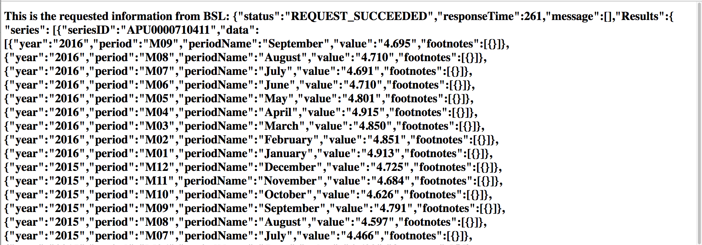

Since, we have to do a server side request, we will be using node.js.
Here is code that you can save as a JavaScript file and run your code. Note:For server side work, you'll need Node.js, Express.js and Handlebars.
var express = require('express');
var bodyParser = require('body-parser');
var app = express();
var handlebars = require('express-handlebars').create({defaultLayout: 'main'});
app.engine('handlebars', handlebars.engine);
app.set('view engine', 'handlebars');
app.set('port', 1926 );
app.use(bodyParser.urlencoded({ extended: false }));
app.use(bodyParser.json());
//load the request module
var request = require('request');
app.get('/',function(req,res){
var context = {};
request('http://api.bls.gov/publicAPI/v2/timeseries/data/APU0000710411', retrieveData);
function retrieveData(err, response, body){
if(!err && response.statusCode < 400)
{
context.sentData = body;
console.log(body);
res.render('get',context);
} else {
console.log(err);
console.log(response.statusCode);
}
}
});
/* standard 404 messages*/
app.use(function(req, res){
res.status(404);
res.render('404');
});
/* standard 500 messages */
app.use(function(err, req, res, next){
console.log(err.stack);
res.status(500);
res.render('500');
});
app.listen(app.get('port'), function(){
console.log('Express started on port 1927; press Ctrl - C to terminate');
});
By using Express's app.get(...) function, we're allowing the user to make a specific get request to our server. The server then makes it own request using request('http://... and handles the response using the self-constructed function, retrieveData . If there are no errors, then our function will simply attach the body of the response to the context, and pass the context to our get.handlebars page. Because we passed it to context.sendData, we're really passing it to get.handlebars .
In the get.handlebars, we can display the raw JSON data in the sendData object just by placing {{sendData}} where we want the code to display. Below is how I have set up get.handlebars .
<h1> This is the requested information from BSL: {{sentData}} </h1>
This is the response that we will receive via our webpage:
Here, I can see that the average price of ice cream for September 2016 is $4.695 vs $4.466 in July 2015. Even though it is more expensive now, it's still off from the high of $4.913 in January 2016.